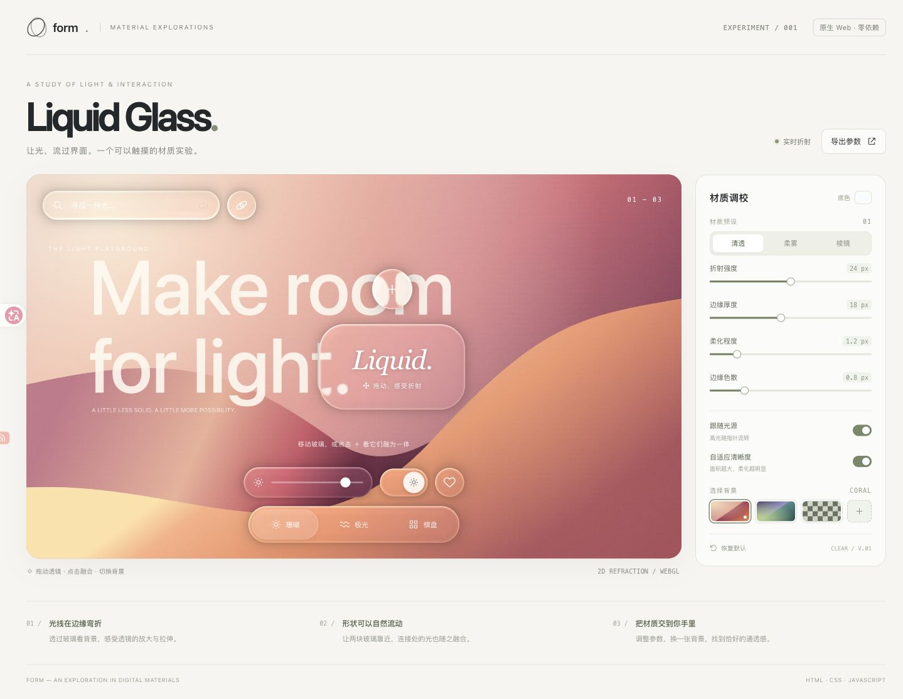
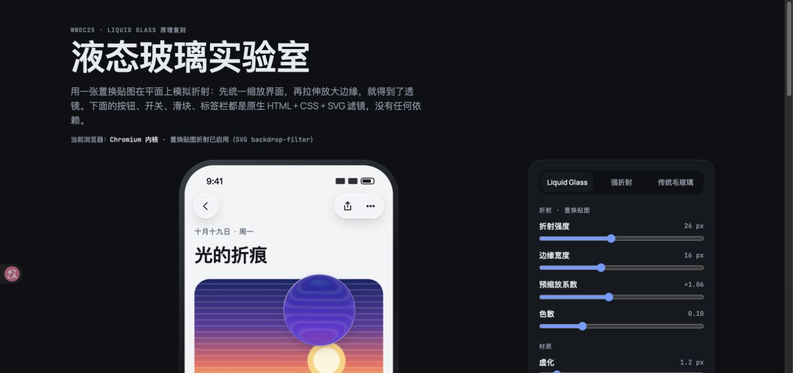
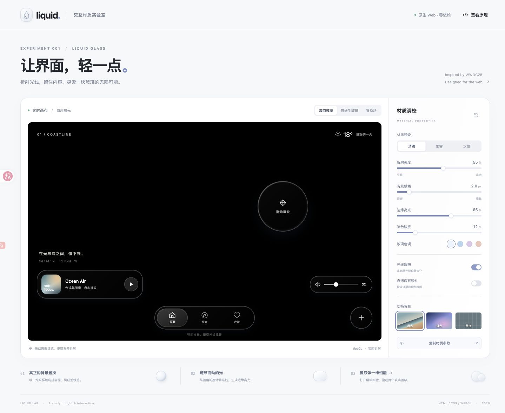

ONE IDEA. THREE INTERPRETATIONS.
同一束光，三种表达。
同一个液态玻璃主题，由 ChatGPT Pro、Claude 与 Codex 分别实现。
选择一个版本，拖动、调节，亲手感受它们的不同。


体验提示 · 建议使用桌面 Chrome 或 Edge，尤其是 Claude 版的 SVG 背景滤镜。下载后解压并打开根目录
index.html，可从这里进入三个版本。三个页面的源文件保持原样；Claude 版保留了原有 Google Fonts 链接，离线时使用系统字体。平台名称用于标记页面来源。